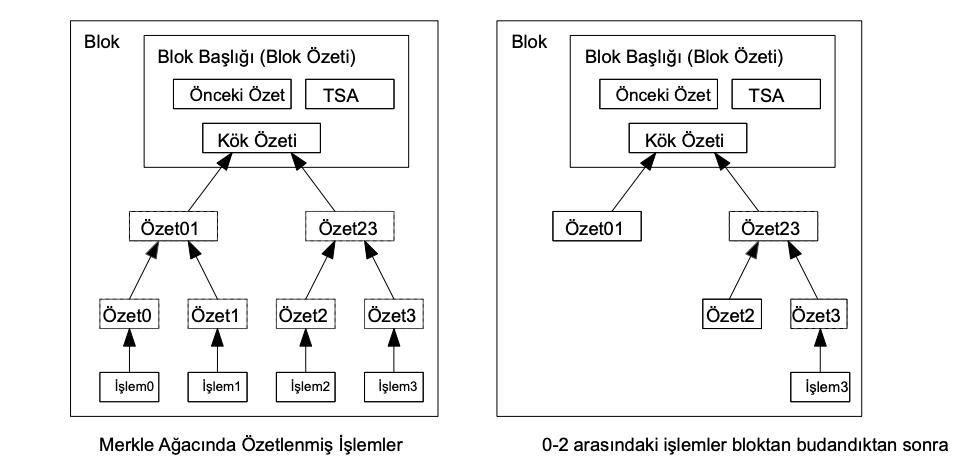
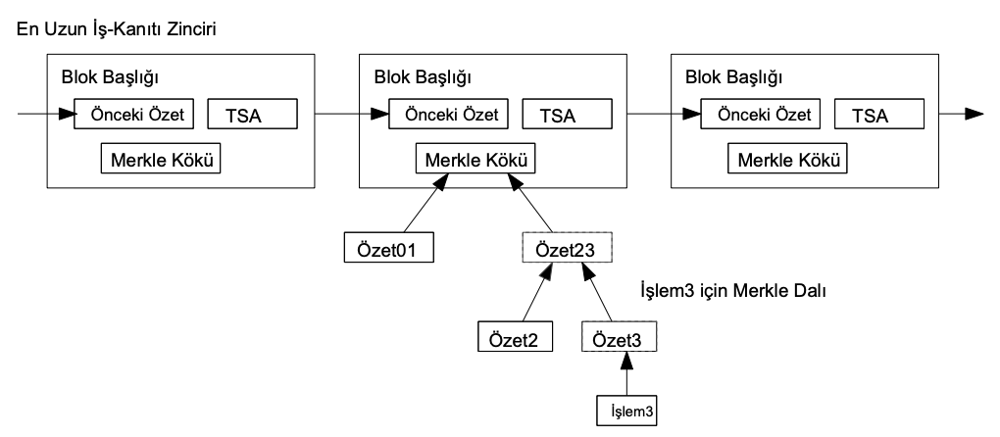

Bir blok başlığı işlem olmadan yaklaşık 80 bayttır. 10 dakikada
bir blok üretildiğini varsayarsak, 80 bayt * 6 * 24 * 365 = yılda
4.2MB yapar. 2008 itibariyle tipik bilgisayar sistemlerinin 2GB
RAM ile satıldığını ve yıllık 1.2GB büyümeyi öngören Moore
yasasını göz önünde bulundurursak, blok başlıkları bellekte
tutulsa bile depolama bir sorun teşkil etmeyecektir.
8. Basitleştirilmiş Ödeme Doğrulaması
Ödemeleri tam bir ağ düğümü çalıştırmadan doğrulamak mümkündür.
Bunun için bir kullanıcının yalnızca en uzun iş kanıtı
zincirindeki blok başlıklarının bir kopyasını saklaması ve işlemi,
içinde zaman damgalandığı bloğa bağlayan Merkle dalını bulması
gerekmektedir. Bu kopyayı en uzun zincirin kendisinde olduğuna
ikna olana dek ağ düğümlerine sorgu yaparak elde edebilir. İşlemi
kendisi kontrol edemez ancak zincirdeki bir yere bağlayarak bir ağ
düğümünün bu işlemi kabul ettiğini görebilir ve kendisinden
sonraki bloklar, ağın işlemi kabul ettiğini onaylayabilir.

Bu sebeple, doğrulama işlemi dürüst düğümler ağı kontrol ettiği
sürece güvenilirken, ağ bir saldırgan tarafından güçlendirilmişse
savunmasız hale gelir. Ağ düğümleri, işlemleri kendileri
doğrulayabilse de, saldırgan uydurma işlemler ile ağı
güçlendirmeye devam edebildiği sürece basitleştirilmiş yöntem
kandırılabilir. Bundan korunmak için bir strateji, geçersiz bir
blok fark ettiğinde ağ düğümlerinden gelen uyarıları alarak,
tutarsızlığı onaylamak için kullanıcının yazılımını tüm bloğu ve
uyarı alan işlemleri indirmeye yönlendirmektir. Sık ödeme alan